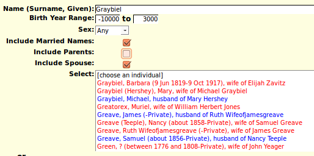
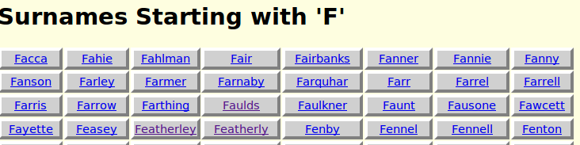

Index of Individuals; Help
This page provides several ways of getting to the web page that displays information about a particular individual from the database. Multiple techniques are provided for a number of reasons:
- The user may not know exactly how a particular name was spelled. Having an alphabetically sorted list of all surnames assists to resolve this.
- The user's browser may not support the technique used to obtain a list of individuals on demand, so a more static method that does not depend upon recent advances in browser technology is provided.
For most purposes the first technique provided will be effective and convenient. The selection list of individuals displays up to 50 individuals, with 10 visible at a time, displayed in alphabetical order first by surname, and then by given name within surname, and then by birth date. Initially this is the first 50 individuals in the database, starting with those for whom no surname is known. Subsequently it updates on the fly as you enter more information. The last name you chose is remembered and reapplied the next time you use this page.

Observe how the individual names in the list are color-coded to identify the sex of the individual: red for female, blue for male, and green for individuals whose gender is not specified in the sources. Each item contains the name, birth date, death date, and by default the names of the individuals parents and spouse[s].
When you type a surname, or the beginning of a surname into the input field the list is updated on the fly whenever you stop typing for more than a fraction of a second, to include the first 50 individuals whose surname, and optionally given name, are greater than or equal to the typed value.
Since there are some family names for which there are more than 50 members, you can also provide a given name, or prefix thereof, separated from the surname by a comma and a space. For example "Smith, John".

Note how the names of the individuals are sorted first by surname, then by given name within surname, and then by birth date, and finally by death date.
Just below the field for entering the name is a pair of fields which permit you to specify a range of birth years to limit the response. By default this range is set to include all possible birth years.
Next comes a selection list permitting you to restrict the gender of the names to match. Initially there is no check for the sex of individuals but you can restrict the response to just males or just females.
The next option is a checkbox which permits you to request that individuals whose married name matches the search name also be included. Observe that for these individuals both the married name and the maiden name are displayed in the selection list. With the default option to include information on spouses you also get the name of the husband.
If you are a signed on as a registered contributor to the site a button is provided which permit you to add a new individual to the family tree who is not related to any other individual in the tree.
Normally the display includes information about the parents and spouses of each individual, so you can quickly identify which individual with a common name is the individual you are looking for. However you can choose to hide either or both of these pieces of information using the checkboxes.
When you use the mouse to click on one of the entries in the selection list, the web page describing the individual is displayed. Note that only a single mouse click is required.
As an alternate path to the individual web pages you may select the first letter of the surname. This displays a list of all of the surnames in the database starting with that letter.
Selecting a surname displays a list of all of the individuals with that surname, as long as there are less than 100. When you use the mouse to click on one of the "buttons" the web page describing the individual is displayed.

If there are more than 100 you are given the option of selecting one or more letters representing the beginning of given names to select. For example if you are looking for someone named Ellen or Helen you may select both the letter 'E' and the letter 'H' by holding down the Ctrl button while selecting the subsequent letters.

Select the "Search" button with the mouse, or press Enter, when you have chosen all of the initial letters you wish. You will then be presented with a list of all matching individuals to choose from. When you use the mouse to click on one of the "buttons" the web page describing the individual is displayed.